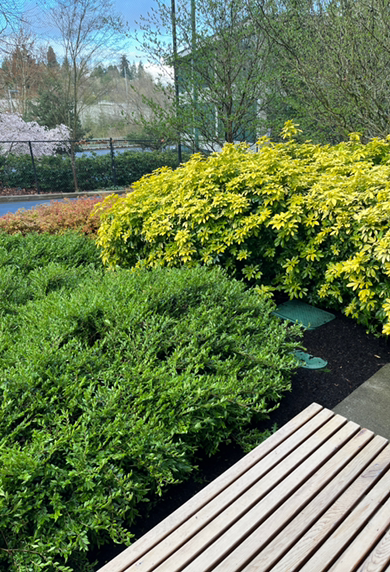

I went for an analogous color scheme. Eventhough I used mutliple colors, they progress very subtley which gives a softer feel to my color scheme. I am trying to convey fantasy with my colors because shades of green often remind me of a forest and the mystery and curiosity that many forests entail.
